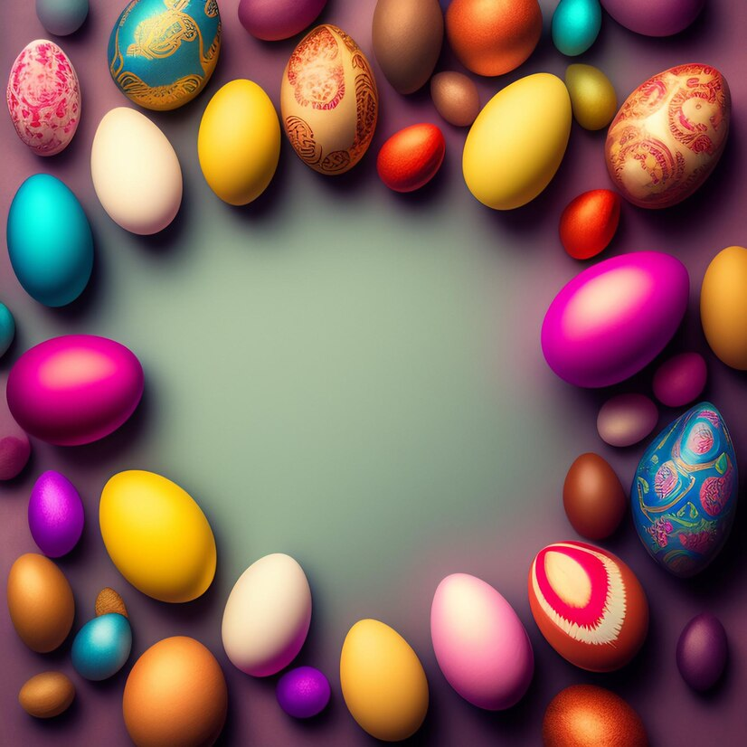

Páscoa no mundo
Páscoa é uma festa origem judaica,que comemora a liberdade do povo hebreu após um longo período de escravidão no Egito. o mesmo sentido de libertação e de esperança, a Páscoa cristã surge posteriormente com a comemoração da ressurreição de Jesus Cristo. Com o mesmo sentido de libertação e de esperança, a Páscoa cristã surge posteriormente com a comemoração da ressurreição de Jesus Cristo..
Como Surgiu?
O povo hebreu foi escravizado durante anos. Por esse motivo, Deus enviou uma praga a fim de tentar convencer o Faraó a libertar os escravos. O Faraó consentiu a sua libertação, mas voltou atrás, e assim foi acontecendo sucessivamente: sempre que Deus enviava uma praga, convencia o Faraó, que depois de se ver livre da mesma, voltava atrás. Até que com a décima praga, o Faraó finalmente libertou os hebreus, episódio que ficou conhecido como Dez pragas do Egito e pode ser lido no livro do Êxodo da Bíblia Sagrada. Na décima praga, Deus ordenou a morte de todos os primogênitos egípcios, inclusive o filho do Faraó. Após a libertação do povo, foi instituída a Páscoa e a travessia rumo a Israel começou.
Ovos de páscoa (cozidos e coloridos ou de chocolate), carregam o germe da vida e representam a fertilidade, o nascimento, a esperança, a renovação e a criação cíclica. Na cultura moderna, é comum presentear as pessoas com ovos de chocolate ou esconder ovos coloridos no domingo de páscoa, os quais serão encontrados pelas crianças.
A Páscoa é uma festa móvel, o que significa que sua data não
é fixa em relação; ao calendário civil. O Primeiro Concílio
de Niceia (325) estabeleceu a data da Páscoa como sendo o
primeiro domi